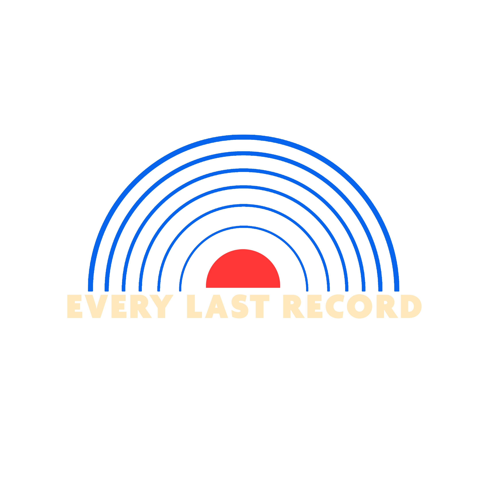
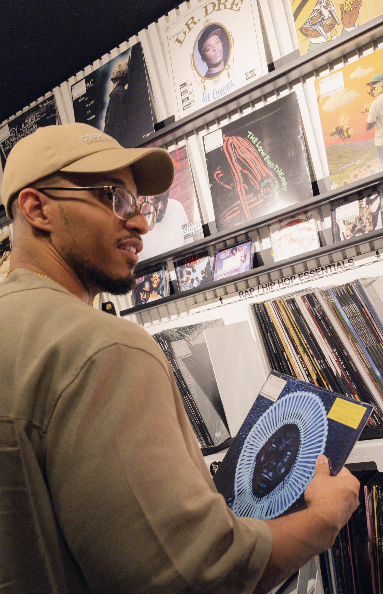
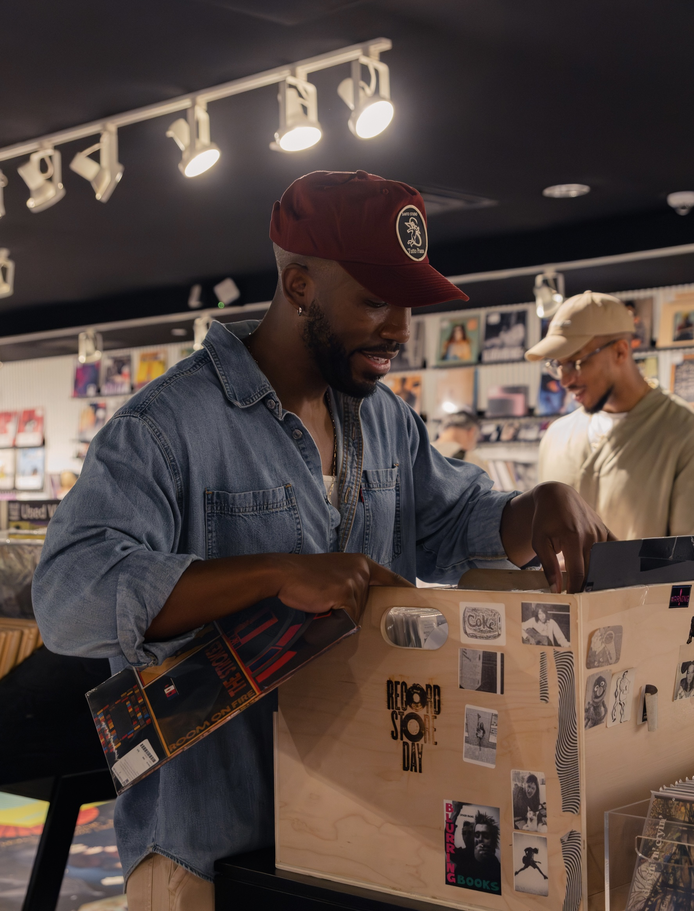

Kid Cudi — Man on The Moon
A raw, experimental project that helped reshape the sound of hip hop and influenced a generation of artists that followed.

Every Last Record
Welcome to the club!
Not just reactions. Not just ratings. We sit with albums, talk through the details, and turn listening into conversation.
Recent Reviews
A raw, experimental project that helped reshape the sound of hip hop and influenced a generation of artists that followed.
From the underdog story to the sound, the skits, and the impact, this one still holds weight.
A project built on duality, memory, and feeling, still pushing boundaries years later.
A masterclass in feel, groove, and musical chemistry.
Meet the Club
Seven voices. One record at a time.

Paris brings a thoughtful perspective and a deep appreciation for the stories music tells.

Flo brings curiosity, thoughtful insight, and a unique perspective to every conversation.

Zeus brings creativity, enthusiasm, and an appreciation for music that pushes boundaries.

Harley brings thoughtful analysis, curiosity, and a perspective that always adds something new to the conversation.

Marcus brings an analytical ear, a deep appreciation for musical detail, and a unique ability to connect sound across genres and generations.

Leo brings a direct perspective, a poetic way of expressing what music makes us feel, and an ability to find meaning where others might not.

Joely brings a bold personality, authenticity, and a genuine joy for music that shines through in every conversation.

Noel works behind the scenes to support the conversations, shape each episode, and help bring the club's vision to life.
Selections

Member curated selections, monthly themes, and songs worth sitting with.
Open on SpotifyListen / Watch / Follow
And remember...don't consume music, let music consume you.
Become a Purposeful Listener